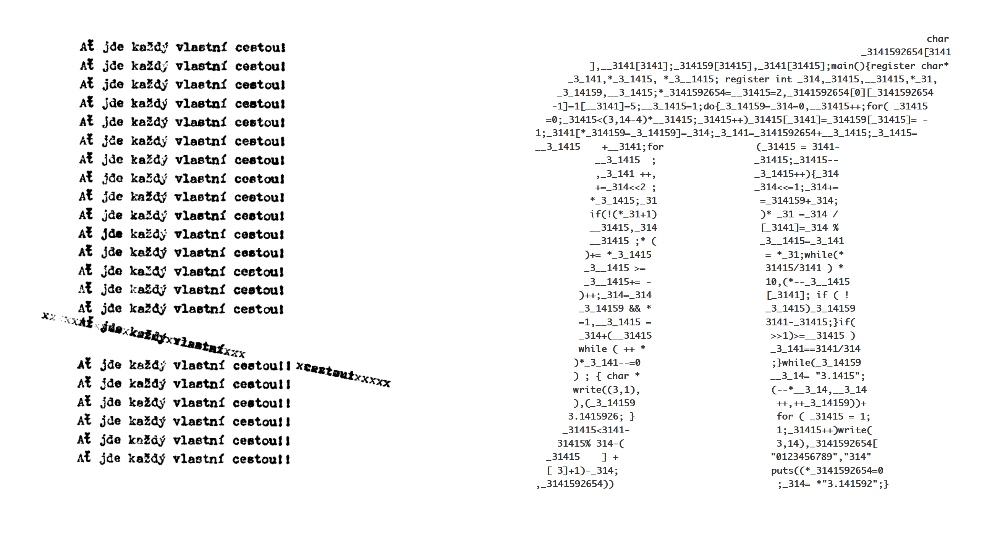
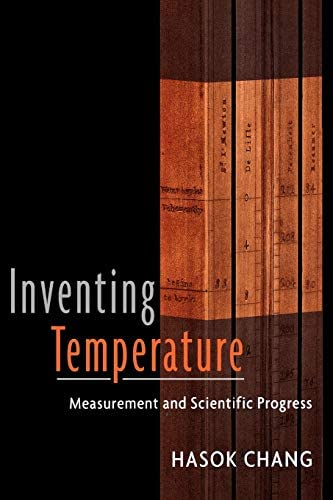
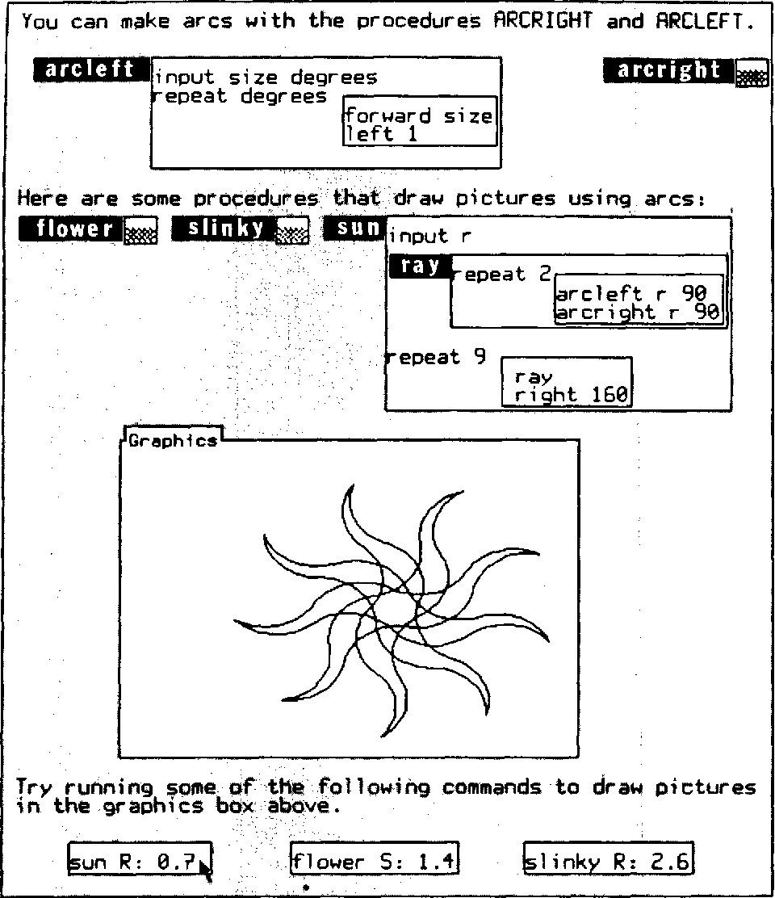
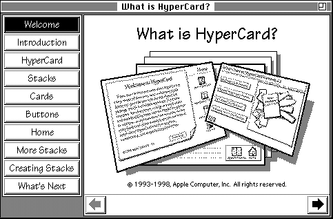

NPRG075
Close look at past and today's programs
Tomáš Petříček, 309 (3rd floor)
petricek@d3s.mff.cuni.cz
https://tomasp.net | @tomaspetricek
Lectures: Monday 12:20, S7
https://d3s.mff.cuni.cz/teaching/nprg075

Close reading
Two perspectives
Two perspectives on programs
Critical code studies
Interpreting the meaning of code, software or systems
in socio-historical context
Attention to detail
Variable names
Making broad points
Labyrinths in culture
Complementary science
Use history & philosophy to answer questions science itself neglects
Attention to detail
How exactly did it work
Making those relevant
New mode of interaction
// Your first C++ program
#include <iostream>
int main()
{
std::cout << "Hello World!\n";
return 0;
}
Close reading
"Close reading is the careful, sustained interpretation of a brief passage of a text"
What can we learn?
Not always educational start (Java, Haskell)
Reference to a long-term hacker culture
Close reading
Programming language design
- Understand socio-historical context
- Design for better social & cultural use?
- Understand lost ideas from the past
- Recover and adapt what may be useful!
Critical code studies
Closer look at code

Hello World in Piet
Why look at esoteric languages?
We must not just observe nature in the raw, but also "twist the lion's tail" to get at hidden insights
May reveal facts about normal languages too!
The meaning of programs
>++++++++[<+++++++++>-]<
.>++++[<+++++++>-]<+.+++
++++..+++.>>++++++[<++++
+++>-]<++.------------.>
++++++[<+++++++++>-]<+.<
.+++.------.--------.>>>
++++[<++++++++>-]<+.
Speaking code
"Like all codes, [source code] is only interpretable within the context of the overall network of relations that make its operations unstable."
Meaning of code
-
Meaning for the machine
Relies on technological context - compilers, specification -
Meaning for a human reader
Relies on socio-cultural context
Multiple levels of meaning


Mutual influences
Social shapes technical
Programming reflects our thinking about the world
e.g. division of labour
Technical shapes social
Abstractions define how we think about software
e.g. information hiding

Foo, bar, baz, ...
(Lennon, 2018)
Cultural pointer
Akin to programming language pointers
Marks work as belonging to a particular culture
Foo, bar, baz...
As cultural pointers
- Metasyntactic variable / meaning placeholder
- Variable names and comments are for humans
- Neither \(x\) nor
AbstractSingletonProxyFactoryBean - ARPANET and Request For Comments (RFCs)
Close look at UNIX 6

Process switching function
- Released in 1975 for PDP-11
- What can we learn about it?
- tinyurl.com/nprg075-unix
Close reading UNIX code
- Variable names: i, n, p, rp
- "set up his segmentation registers"
- "You are not expected to understand this."
You are not expected to understand this

The real problem is that we didn't understand what was going on either.
The savu/retu mechanism (...) was fundamentally broken (...).
[It] worked on the PDP-11 because its compiler always used the same context-save mechanism (...).
[Eventually we] redid the coroutine control-passing primitives altogether,
and this code section,
and the comment, passed into history.

10 PRINT
Cultural context of
a BASIC one-liner
The birth of microcomputers and tinkerer culture
Randomness and variations of the pattern
Recreating the one-liner in other systems
Critical code studies
Ideas for programming
- What socio-technical context design uses?
- Design for hackers or non-programmers?
- Analyse what exists, show what could exist
- "Performative science fiction" demos
Thimbl: Performative science fiction

Federated social network (~2011)
- Artwork, not to compete with Twitter
- Built with a different social context
- Can it work without investments?
How is it supposed to work?
- Built with as little code as possible
- Using SSH and Finger protocol (1970s)
- Low-tech version of ActivityPub (Mastodon)
Programming system demos

Future programming
- Imagining alternative ways
- Often through (limited) demos
- End-user, visual, domain-specific
Places to look at
- Bret Victor: worrydream.com
- LIVE workshop: liveprog.org
- Ink & Switch: inkandswitch.com
Demo
Crosscut: Drawing Dynamic Models
Complementary science
Learning from the past

Complementary science
Contribute to scientific knowledge through historical and philosophical investigations
Effectiveness of science leads to dogmatism
Narrow focus can result in loss of knowledges

Heat reflection (1791)
Heat produced by "caloric", cold maybe by another "positive" substance.
Heat is reflected by mirror!
Cold is absence of heat?
But also reflected!
Modern physicists never talk about reflection of cold!
Complementary programming?


Dot-Com Design
(Ankerson, 2018)
Amateur can easily cobble something together
Hackability and familiarity of
graphical editors
Gives designers
full control
Complementary science
Why use it for programming
- Feel all programming is the same?
- Programming has brief but rich history
- Not discarded for experimental failures
- Ideas are (relatively) easy to recreate!
Demo
Annoying pop-ups of the 1990s

Learning from
the 1990s web
View-source, copy
and edit culture
Hosting on Geocities & creative community
Limited user protection (hacks are for fun)
Two eras of the web
2010s web
Compiled code
Minified with dependencies
Custom elements
Custom pop-ups using <div>
Opaque structure
WebAssembly & Canvas
1990s web
View source
Readable source code
Copy & paste
Self-contained scripts
Pop-up windows
Unchecked window.open
Learning from the 90s web

WebStrates project
- Shareable dynamic media
- Document and code in DOM
- Synchronized across clients
- In-page editor & dev tools
Further ideas
- How to support reuse by copying?
- Openness and addressability of DOM
Good old programming systems

Boxer's naive realism
You see all there is

Smalltalk's self-sustainability
Built in itself
Good old programming systems

Pygmalion's programming
By demonstration

Hypercard's usability
From user to programmer
Conclusions
Close look at programs

Close look
As evaluation
Reveals more than one may immediately see
As design tool
Think about programming from new perspectives
Reading

Are spreadsheets programming?
- Spreadsheets are Code: An Overview of Software Engineering Approaches Applied to Spreadsheets
- tinyurl.com/nprg075-excel
Why should you read this?
- Interesting case of end-user programming
- How to use programming ideas in new domains
Conclusions
Close reading and complementary science
- Close look at fine coding details
- Reveals broader cultural points
- Close look at past programming systems
- Reveals ideas we may have forgotten
Tomáš Petříček, 309 (3rd floor)
petricek@d3s.mff.cuni.cz
https://tomasp.net | @tomaspetricek
https://d3s.mff.cuni.cz/teaching/nprg075
References (1/2)
Critical code studies
- Marino, M. C. (2020). Critical Code Studies, MIT Press
- Cox, G. (2012). Speaking Code, MIT Press
- Lennon, B. (2021). Foo, Bar, Baz…: The Metasyntactic Variable and the Programming Language Hierarchy, Philosophy & Technology
-
Montfort, N. et al. (2013). 10 PRINT
CHR$(205.5+RND(1)); : GOTO 10, MIT Press
Interesting past systems
- diSessa, A. A., Abelson, H. (1986). Boxer: A Reconstructible Computational Medium., CACM
- Smith, D. C. (1975). PYGMALION: A creative programming environment, MIT PhD
References (2/2)
Complementary science & programming
- Chang, H. (2008). Inventing temperature, Oxford
- Ankerson, M. S. (2018). Dot-Com Design: The Rise of a Usable, Social, Commercial Web, NYU
- Petricek, T. (2021). Pop-up from Hell On the growing opacity of web programs, Online
History of UNIX
- Ritchie, D. (2002). Odd Comments and Strange Doings in Unix
- Bosch, T. ed. (2022). You Are Not Expected to Understand This: How 26 Lines of Code Changed the World, Princeton
Programming demos
-
Kaliski, S. et al. (2022). Crosscut: Drawing
Dynamic Models, Ink & Switch